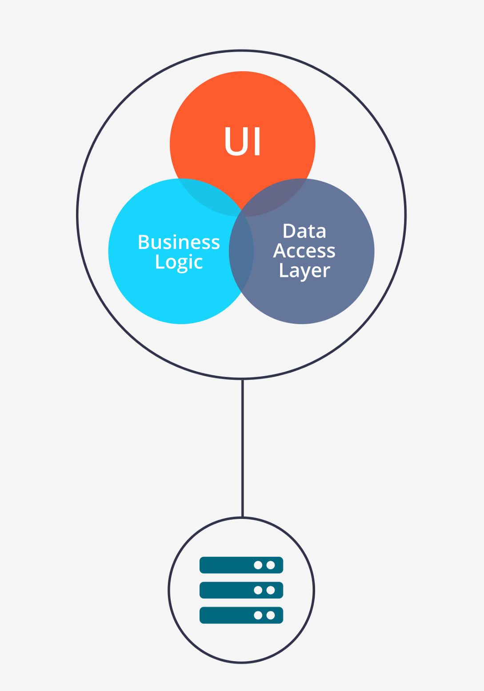

What are microservices?
Presented by Ivan Grakov
RS School
January 2020
Industrial Software Development is a team work
What do we need software for?
Software development cycle
Development and operations cycle
Monolith architecture overview

Monolith architecture features

Microservices architecture overview
Microservices architecture examples
Microservices Pros
| Company |
Deployment Frequency |
| Amazon |
Every 11.6 sec |
| Netflix |
50 times a day |
| Etsy |
60 times a day |
Microservices Pros
Microservices Cons
- Complexity of a distributed system for developers
- Requests that span across multiple microservices
- Overhead of communication between services
- Operational compexity
- Full or partial service unavailability
It all depends!
Thanks for your attention